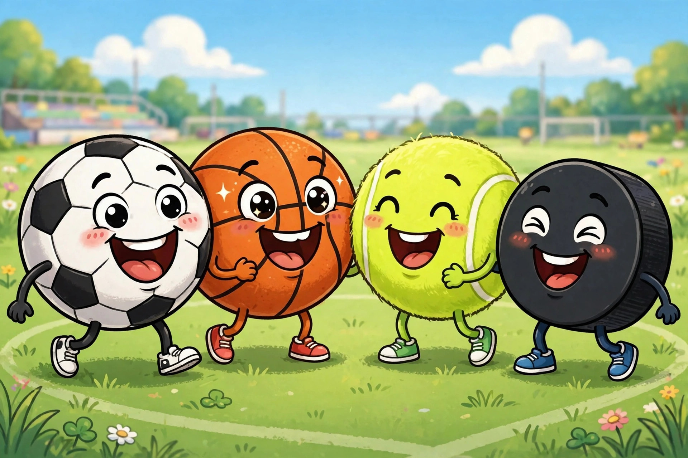

Sports Jokes for Kids Ages 9–12

Sports jokes should be the easiest jokes in the world — every game hands you balls, goals, races, and last-second comebacks to play with. Yet the kid-focused collections online are surprisingly thin: one teacher site offers just 10 physical-education jokes, roughly one per sport, and a reading blog manages only 5, while the big lists of 50 or more are dad jokes written for adult radio audiences. This page goes deep instead: more than thirty clean jokes for ages 9–12, organized by sport type so a soccer player, a swimmer, and a gymnast each get a section of their own. It also covers the part no list bothers with — sportsmanship. A joke on the field is a tool: used well, it loosens up a nervous teammate and makes a whole bench breathe easier; used badly, it lands on the one kid who just made a mistake. The good-sport guide below draws that line clearly, and it matters more than any single punchline on this page. Age note: the ball-sports jokes suit ages eight and up, while the solo-sports set leans on trickier wordplay — puns about punchlines, routes, and raising bars — that plays best at ten to twelve.
Ball sports jokes
Ball sports produce the most jokes because they produce the most double meanings: tie, net, steal, dunk, hog, catch. Every one of those words lives a second life outside the game, and a joke is just the two lives colliding. Start here — this is the section most likely to contain your sport, and the jokes most likely to be traded in a dugout or on a bench this week.
- Why did the soccer player bring string to the game? To tie the score when it mattered most.
- What did the basketball player say to the hoop? We really need to net more time together.
- Why do basketball players love cookies? Because dunking is already their best skill.
- Why did the baseball player get arrested at the game? He tried to steal second base, obviously.
- What do you call a pig who plays basketball? A ball hog, and proud of it.
- Why did the football coach go to the bank? To get his quarterback back before kickoff.
- What runs around a soccer field but never moves? The sideline, holding everything together.
- Why was Cinderella such a poor soccer player? She kept running away from the ball.
- What did the glove say to the baseball? Catch you later, hopefully with style.
- Why do golfers bring an extra pair of pants? In case they get a hole in one.
- What is a tennis player's favorite city? Volley-land is nice, but they love a good rally anywhere.
- Why did the tennis ball complain to the racket? It felt strung along all season.
Ice, snow, and water sports jokes
Cold and wet sports have a comedy advantage: built-in slapstick. Ice is slippery, water splashes, and snowboarders fall down in ways that look choreographed. The jokes stay kind, though — every one of them laughs at the sport itself, the equipment, or a skeleton driving a resurfacing machine, never at a real person who fell. That distinction is the whole secret of this section, and of the good-sport guide further down the page.
- Why can't hockey players tell long jokes? The punchlines keep getting iced.
- What did the skeleton drive to the hockey game? The Zam-bony, very slowly and carefully.
- Why did the figure skater bring a ladder to practice? She heard the bar for jumps was set high.
- What do you call a snowboarder who tells jokes? A real slope comedian, down-hill all the way.
- Why do swimmers make great comedians? They always dive right into the punchline.
- What is a fish's favorite sport? Anything with a splash zone, especially the dive team.
- Why did the scuba diver bring a joke book underwater? For deep-sea humor, pressure-tested and everything.
- What do surfers do when the waves are flat? They hang ten jokes on the shore instead.
- Why was the hockey puck so calm? It knew getting fired at the net was literally the job.
Racing, gymnastics, and solo sports jokes
Solo sports look quiet from the outside, which makes them perfect joke territory: runners, gymnasts, cyclists, and archers spend hours training with mostly their own thoughts for company, and thoughts, given hours, turn into wordplay. These jokes also travel well — a runner's joke works at track practice, at a family fun run, and read off a card taped inside a gym locker on the morning of a big meet.
- What is a runner's favorite subject at school? Jog-raphy, with extra laps for homework.
- Why did the marathon runner bring a map to bed? She liked to sleep on her route decisions.
- What do gymnasts use to stay in touch? They just flip each other a message.
- Why did the gymnast put a ladder in the gym? She wanted to raise the bar herself this time.
- What is a boxer's favorite part of any joke? The punchline, delivered right on the chin of the story.
- Why do cyclists never tell jokes uphill? They are saving their breath for the descent punchline.
- What sport do eggs play best? Running — they are always getting scrambled out of the blocks.
- Why did the weightlifter bring jokes to the gym? To break the ice before breaking a sweat.
- What do you call a karate expert pig? A pork chop with a black belt and perfect form.
- Why did the archer tell jokes during practice? Every one of them had a point.
- What is a cheerleader's favorite drink? Root beer — it already has the spirit built in.
- Why did the referee bring a joke book to the game? In case the match needed a good call-back.
The good-sport rule: which joke for which moment
Sports run on feelings — winning feels huge and losing feels public — so the moment chooses the joke, not the other way around:
- Before a game, teammates nervous → a ball-sports joke about equipment or the sport itself. Laughing at the game lowers the pressure on everyone playing it.
- Your team just scored → celebrate with your own bench. A joke aimed at the other team in that moment is not humor, it is taunting with a punchline attached.
- Your team just conceded → one gentle joke about the sport, offered to your own teammates only, and only if the bench wants it. Sometimes the kind move is quiet.
- A friend on the other team played brilliantly → compliment first, joke second, and make the joke about yourself or the game. Rivals who laugh together stay rivals in the good way.
- Someone made a mistake everyone saw → no jokes about the play, the player, or the moment. Not that day, not that week. This rule has no exceptions, and following it is what makes your other jokes welcome.
How to deliver a sports joke like a team captain
Captains talk so the whole team hears, briefly, and at the right moment. Joke delivery on a team works exactly the same way:
- Pick the huddle moments. Warm-ups, water breaks, and the bus ride are joke windows. Drills, instructions, and the minute before a restart are not.
- Keep it to one breath. If the setup needs explaining, the joke is too complicated for a noisy field. Choose jokes that fit in a single sentence plus a punchline.
- Tell it to the group, not at a person. Face the bench, the circle, or the bus — a sports joke is a shared warm-up, not a spotlight.
- Let the laugh do the stretching. After a landed joke, stop. The relaxed thirty seconds that follow are worth more than a second joke would be.
- Hand it off. End with a challenge — top that one at the next break. Teams that trade jokes build a shared library, and shared libraries outlast any single season.
What success looks like: a teammate repeats your joke at the next practice, to a player who was not there the first time. A joke that makes the roster has officially joined the team.
Sports joke styles compared
| Style | Where it plays | Best moment | Watch out for |
|---|---|---|---|
| Equipment and wordplay jokes | Every sport | Warm-ups, bus rides | Needs the audience to know the sport's basic words |
| Sport-picture jokes | Ice, snow, water sports | After practice, storytelling | Never aim the picture at a real teammate's fall |
| Solo-sport puns | Running, gym, cycling, archery | Locker cards, one-to-one | Trickier wordplay — best for ages 10–12 |
Make your own sports pun
Sports are a pun factory because every game runs on words that escaped into everyday language: goal, score, match, point, bat, base, court, track, field. The workshop method is three steps. First, list five words from your sport that also mean something else — a runner's laps, a tennis player's court, an archer's point. Second, build the most ordinary sentence you can with the everyday meaning: the meeting had a point, the class went to court. Third, collide the two worlds in one short scene and phrase it as a question with a straight face: why did the archer bring jokes to practice? Every one had a point. If the collision needs a paragraph to explain, the two meanings are too far apart — pick a closer word and rebuild. The best sports puns feel inevitable, like the joke was hiding in the rulebook the whole time.
Team joke games
Bench Rotation. On a bus ride or during a long warm-up, the joke moves down the bench: each player tells one, and the next player must tell one about a different sport than the player before. Repeat a sport and the rotation resets, with the repeater owing the team a joke about the least joke-friendly sport anyone can name — competitive synchronized swimming has ended more arguments than any referee. Caption the Play. Someone describes a famous type of play in boring words — a goalie stopped a ball — and everyone gets one sentence to make it funny without naming the teams or the score. The captain picks the winner, the winner picks the next play. Both games share a design rule with the good-sport guide above: the jokes target sports, plays, and equipment — never players — which is exactly why they can run all season without anyone dreading their turn.
Between seasons, the school jokes collection covers the other arena where you spend most of your year — same rules, kinder jokes, no referees.